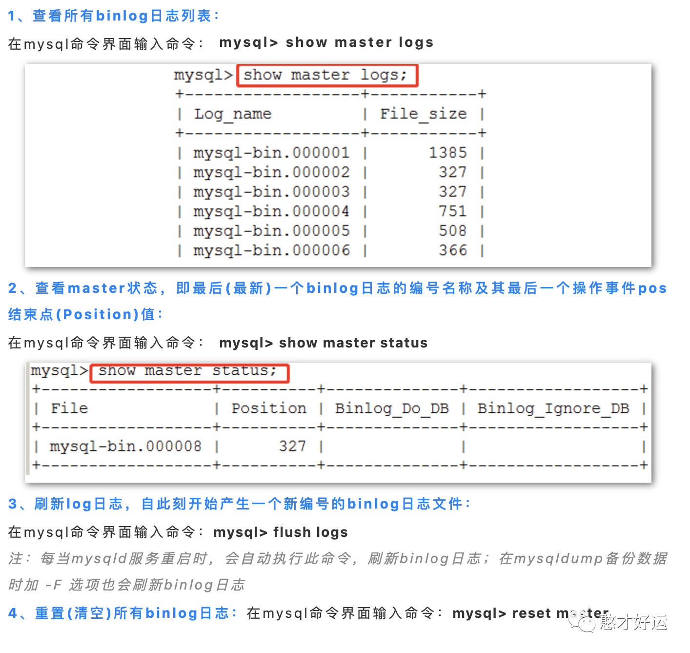
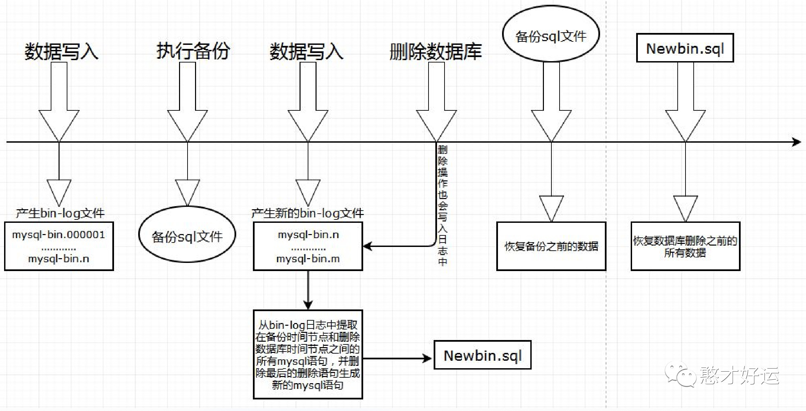
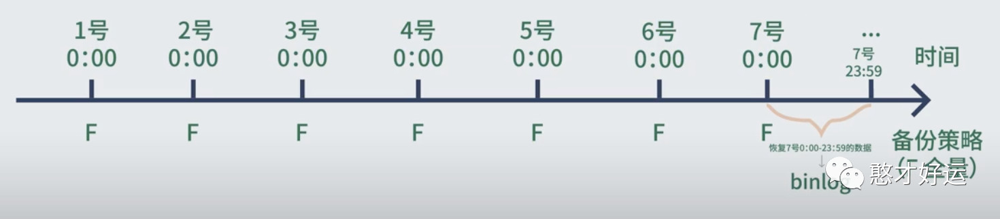
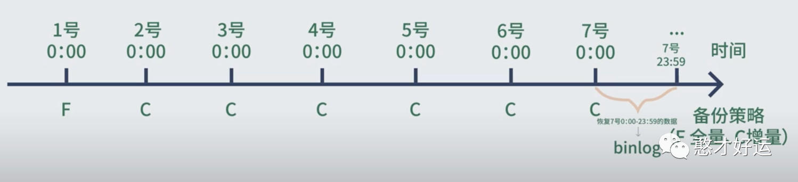
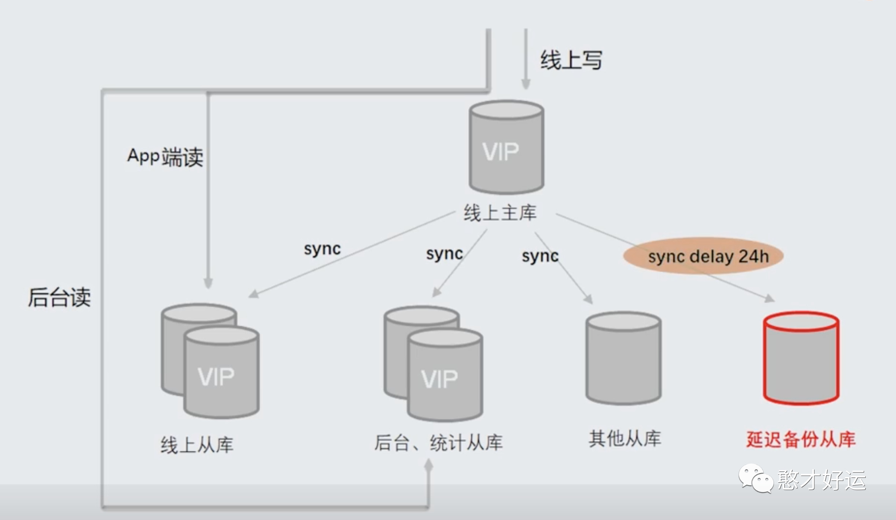

了解一下Binlog恢复数据的保命技巧，删库也不用急着跑路。
一个企业最核心最具有价值的就是数据了，不管你什么架构，一切都是为数据服务的，数据一旦被删除，每过一秒都将对企业造成巨大的损失。尽管如此还是经常发生删库跑路的案例。在刚工作一年时间内，发生在我身边已经有两起类似事故，所以还是需要提前学习一下如何快速对数据进行恢复，当然最好这种事情不要发生在你我身上。
Binlog介绍
Binlog 就是binary log，二进制日志文件，这个文件记录了MySQL所有的DDL和DML(除了数据查询语句)语句，以事件形式记录，还包含语句所执行的消耗的时间。Binlog日志对于MySQL数据库来说是十分重要的。在数据丢失的紧急情况下，可以尝试用binlog日志功能进行数据恢复操作，其他关系型数据库也是大同小异。
Binlog日志包括两类文件：
1）二进制日志索引文件(文件名后缀为.index):用于记录所有的二进制文件；
2）二进制日志文件(文件名后缀为.00000*):用于记录数据库所有的DDL和DML(除了数据查询语句select)语句事件。
Binlog的三种模式:
Statement Level模式：MySQL 5.7.7之前的版本默认是这种模式，这种模式只存储执行的SQL语句，没有真正的数据，无法进行数据恢复，生产环境也不会使用此模式；
Row Level模式：在MySQL 5.7.7之后的版本默认是这种模式，它是基于行的记录，并且会将每一条的数据变化记录到日志文件中，是没有SQL语句的，这种我们可以解析出真正的数据，生产环境中建议采用Row Level模式，当然它也有一定的缺点，比如记录数据时产生大量的binlog，面对存储过程时可能出现数据不一致的情况；
Mixed模式：它是混合的一种复制模式，默认的情况下是Statement，某些情况下会切换到Row格式;
在MySQL命令行下使用show variables like ‘log_bin’，命令查看binlog日志是否开启，Value的值为ON表示开启，为OFF表示关闭；
在MySQL命令行下使用show variabels like ‘binlog_format’，命令查看开启的binlog使用哪种日志模式；
查看Binlog日志的状态
读取Binlog日志中的内容:
binlog是二进制文件，普通文件查看器cat more vi打开都会出现二进制乱码，必须使用自带的 mysqlbinlog 命令查看binlog日志:
1 | mysqlbinlog /usr/local/mysql/data/mysql-bin.000005 |
这种办法读取出binlog日志的全文内容较多，不容易分辨查看pos点信息，这里介绍一种更为方便的查询命令在MySQL的命令界面：
在mysql命令界面输入：mysql> show binlog events [IN ‘log_name’] [FROM pos] [LIMIT [offset,] row_count]
IN ‘log_name’：指定要查询的binlog文件名(不指定就是第一个binlog文件)
FROM pos：指定从哪个pos起始点开始查起(不指定就是从整个文件首个pos点开始算)
LIMIT [offset,]：偏移量(不指定就是0)
row_count：查询总条数(不指定就是所有行)
当出现mysqlbinlog: [ERROR] unknown variable ‘default-character-set=utf8mb4’，原因是mysqlbinlog这个工具无法识别binlog中的配置中的default-character-set=utf8mb4这个指令。
两个方法可以解决这个问题：一是在MySQL的配置/etc/my.cnf中将default-character-set=utf8 修改为 character-set-server = utf8mb4，但是这需要重启MySQL服务，如果MySQL服务正在工作，那样代价会比较大；二是用mysqlbinlog --no-defaults mysql-bin.000001命令打开。
通过Binlog恢复数据
目前数据库主流的备份方案如下：
全量备份+Binlog恢复：这种方式适用于小数据库，数据恢复速度较快；
全量备份+增量备份+Binlog恢复：这种方式适用于大数据库，能够节省磁盘空间，但是数据恢复速度较慢；
今天先不讨论全量备份或增量备份数据恢复的效率问题，重点讲解一下如何通过binlog来恢复数据。基于最新的完整备份+Binlog进行数据恢复，这时需要把备份导回去，还要找出Binlog DELETE前的pos位置，再进行binlog恢复，恢复完后再把记录恢复到误操的环境上，如果表很大，这时间要很久。我们可以通过上述mysqlbinlog命令查看日志，然后手动将delete语句改成insert语句，但是对于生成环境上一般设置binlog为2G的文件来说，手动替换的效率太低。
那么有没有可以通过binlog日志反向解析出对应的SQL语句，使用的比较多的一个是不知名大佬开源的binlog-rollback.pl脚本（在此基础上衍生出的python反向解析脚本，文末链接中推荐两款）以及美团大佬开源的flashback工具。Perl脚本需要输入用户名和密码而flashback工具不需要输入用户名和密码并且生成falshback文件，这个文件是反解后的二进制文件，速度有较大提升。
1 | [root@localhost ~]# perl binlog-rollback.pl -f '/usr/local/data/mysql-bin.000001' -o '/tmp/t.sql' -h '127.0.0.1' -u 'root' -p 'password' -P 3306 -i --debug |
1 | ./binary/flashback --binlogFileNames=/usr/local/mysql/data/mysql-bin.000005 |
通过全量备份+binlog恢复数据速度还是比较慢，可以通过增加延迟备份从库从另外一个角度来解决问题：
如何避免发生删库事件
生产环境下经常发生删库事件，大多数情况是因为数据库表管理权限不当，导致权限过大又出现误操作，合理地分配权限对于开发同学也是非常重要的，对于如何管理MySQL数据库表的权限可以阅读数据库大神丁奇的MySQL45讲中第42讲"grant之后要跟着flushprivileges吗"。
参考链接
Github上Star较多的Python实现的binlog反向解析sql（一）
Github上Star较多的Python实现的binlog反向解析sql（二）
重点阅读推荐
MySQL利用binlog恢复误操作数据（Python脚本）
关注【憨才好运】微信公众号，了解更多精彩内容⬇️⬇️⬇️